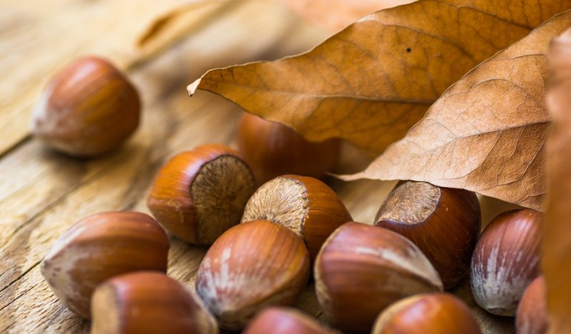
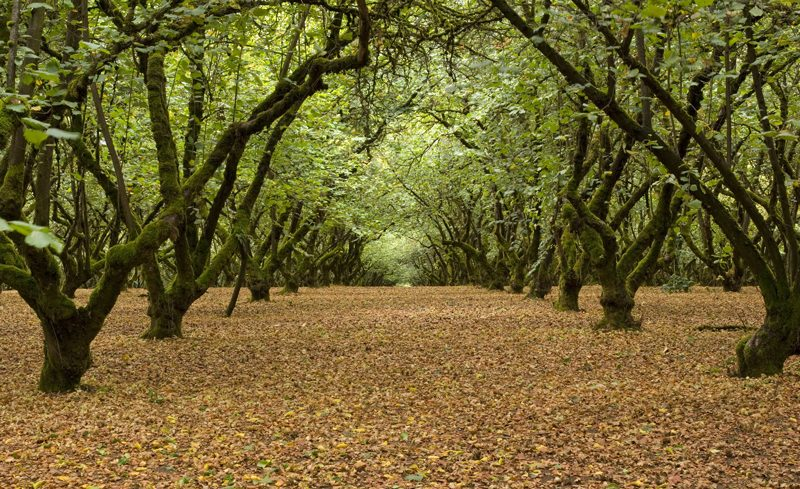
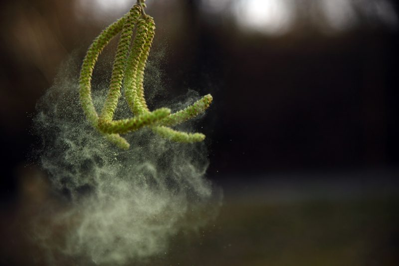
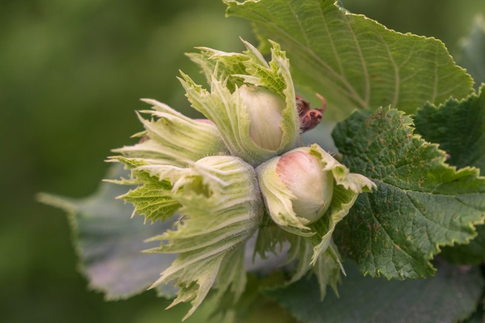
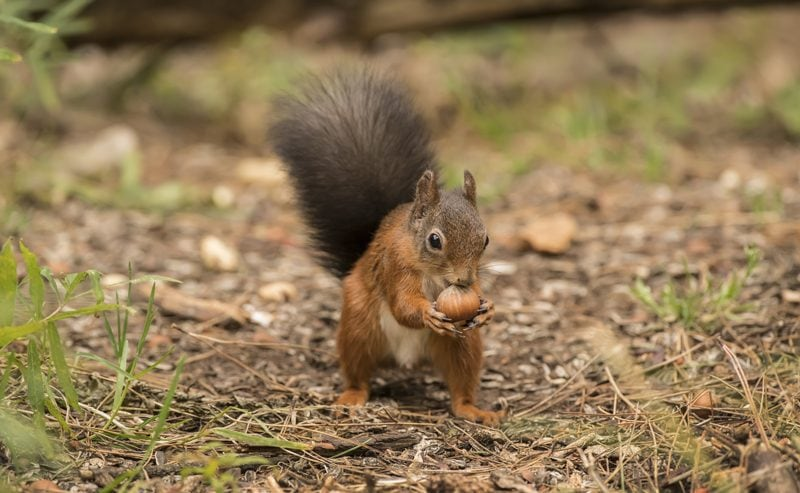

Hazelnuts – Oregon State Nut
Hazelnuts (also known as American filberts) are a sweet-flavored nut that can be enjoyed as a snack and in many different sweet and savory recipes. They contain vitamins, minerals, protein, fiber, and healthy fats. So whatever you do, don’t miss out on adding more hazelnuts to your diet.

The hazelnut became Oregon’s official State Nut in 1989, and to this day roughly 800 Oregon farm families grow hazelnuts on 67,000 acres. Now that’s a lot of nuts. If you wish to cross the waters… Turkey is the world’s largest producer of hazelnuts. Once a tree is planted it will begin producing nuts approximately two to three years after planting, eight years if grown from seed. So, if you want to plant your own hazelnut tree… you best get started.

I don’t know about you, but I would LOVE to take a walk through this orchard. So majestic and tranquil!
Unlike the walnut tree that can reach 100 feet in height, the hazelnut tree only reaches 20 to 40 feet in height up towards the sky. They are an old faithful tree that can produce nuts for up to 100 years. That’s pretty darn impressive if you ask me. The one, well one of the many, unique things about the hazelnut tree is that while other trees are sleeping, it is busy blooming and pollinating in the middle of winter.

The wind carries the pollen from yellow catkins to a tiny red flower, where it stays dormant until June when the nut begins to form. So far, I don’t know of another nut tree that pollinates in the winter. But then, I do have much more to learn so don’t hold me to that.
The trees take a short break before they begin their spring growth. Come late spring the nuts begin to form, and by mid-summer green nuts in clusters can be seen throughout the orchards. Up close each hazelnut is covered with a leafy capsule, followed by a hard outer shell that protects the oval, yellowish-brown kernel hidden inside. Each tree produces 20 to 25 pounds of hazelnuts per year.

As the summer months start to wind down, the green nuts turn to the “hazel” color they are known for, and in early fall they separate from the husks and fall to the orchard floor. Growers sweep them into rows and then pick them up with a harvester. As they are harvested, the nuts move through a series of air legs that sort out any lighter debris.
From there, they are shipped to one of many wash and dry operations where they are sorted by size, they are either sold in the shell or they move on to be cracked or further processed. The Pacific Northwest is one of the few places in the world where the nuts are dried very quickly as many areas depend on the sun. This helps ensure the wonderful quality of Oregon hazelnuts.

The tasty nuts are highly prized for their easy-to-crack shells and small, sweet kernel. Squirrels love them as well … most likely for the same reasons.
The Nut Itself
- Hazelnuts are enjoyed all on their own.
- The nuts can be ground into flour or a nutty spread.
- In raw recipes, they are used to make many sweet desserts such as brownies or pie crusts.
- They have double the protein and good fats of the same amount of eggs.
- Hazelnuts are a particularly versatile nut because of all of the different ways they can be used. They can be enjoyed raw, roasted, in a paste, or as an ingredient in countless healthy dishes.
- The hazelnut kernel has a dark brown skin with a bitter taste but containing many phytochemicals (antioxidants); 3-caffeoylquinic acid, 5-caffeoylquinic acid, p-coumaroyltartaric acid, myricetin, quercetin, gallic acid, kaempferol. Go ahead and Google those if you want to really geek-out.
The Trunk
- The branches of the hazelnut tree are extremely supple. They are used to make baskets. They are often woven into headdresses and other decorative items.
- The charcoal made from burning the branches of the hazelnut tree make crayons and gunpowder.
Hazelnut Oil
- Oil extracted from the hazelnuts is used as vegetable oil for cooking.
- The oil is also used in the cosmetic and pharmaceutical industry and in aromatherapy.
- They make a cold-pressed carrier oil for massages which is well known for its astringent qualities. It’s a good choice for acne-prone or oily skin, and it also has moisturizing qualities. It also is known to help tighten and tone the skin, and aids in skin regeneration.
- Hazelnuts and the oil made from them are the best-known sources of vitamin E which is essential for a healthy heart and muscles and for normal functioning of the reproductive system.
In Raw Recipe Application
- If possible, purchase raw organic hazelnuts.
- To reduce the enzyme inhibitors it is best to soak and dehydrate them before consumption. Read about that (here).
- Hazelnuts are wonderful when used in crusts, cookies, bars, and even cake recipes.
- You can also make a delicious hazelnut butter.
- They won’t grind down to a fine flour powder, but only to a small crumble.
© AmieSue.com